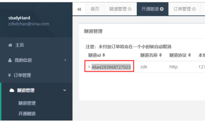
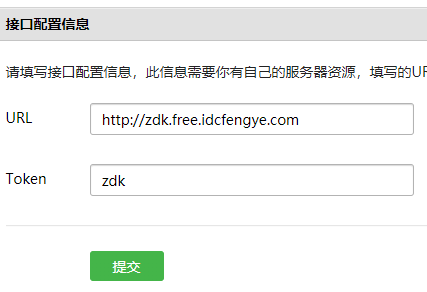
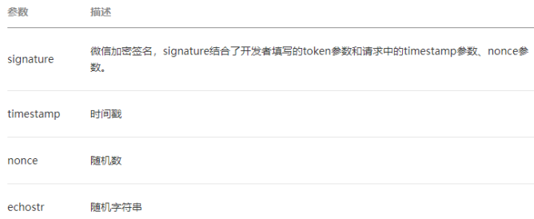
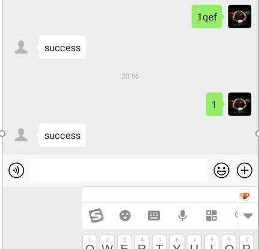
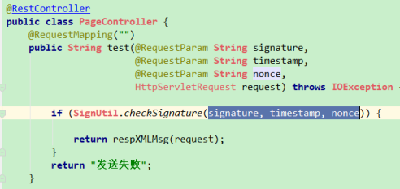

一、 微信公众号
1. src
2.1 内网就是局域网，在本机部署一个项目，不在一个局域网内的人是无法访问的。ngrok通过在外网搭建一个服务器，把本机上的访问地址映射到一个公网的地址，实现本地部署的项目暴露到公网上
2.2 usage
2.2.2 隧道管理 - 开通隧道

2.2.3 下载客户端，启动bat，不要启动exe，启动后将隧道id复制进命令中就完成了本地项目公网暴露
3. 架构
3.1 移动端发送请求到微信服务器，微信服务器再把请求转给自己的服务器
3.1.1 ==》需要设置验证，保证自己的服务器只能被自己的微信公众号访问
{1} 验证需要客户端(微信服务器)和服务端(自己服务器)有相同的signture。自己设置一个token，微信服务器生成时间戳和随机数。然后将这3个数按字典序排序后拼成一个string的signature，然后将时间戳和随机数和成功标记echostr发给自己服务器，自己服务器本身就有token，然后将接收到的这3个数按字典序排序后拼成一个string，然后进行md5或sha-1，生成sign，然后跟穿过来的signature对比，如果相同，说明验证成功
{2} 微信平台无法管理自己服务器上代码，所以统一规定，只要返回echostr，就算成功。echostr就是用来返回的
{3} 在微信公众平台设置自己服务器的url和token

[1] 点击一次提交就会向自己服务器发送一次请求，如果返回的是echostr，就算成功
{4} note
[1] restController也可以接收请求体中的参数，不用非得按restful风格将参数设在url中。
[2] 官方提供包括java的验证类
4. 搭建
4.1 注册微信开发者账号，也可以用测试账号，有了账号才能调API
4.2 创建ngrok服务器，关联自己的项目
4.3 将公众号关联自己的服务器
5. usage
5.1 调用微信API
5.1.1 调用微信API使用restful风格，access_token是调用任何一个微信API都必须传的参数
{1} 微信的API可以使用httpclient发送请求，将access_token作为参数传入即可
5.1.2 access_token
{1} 获取之后，会有有效期，7200秒
{2} 一般获取一次后放到redis或数据库中，等expire_time后再获取一次
5.2 自动回复
5.2.1 src
{1} 架构中，自己服务器对微信前端暴露的接口就一个，就是一开始配置的接口信息。微信的任何操作都往这个url上发。
{2} ==》此处有坑，接口配置验证的时候，返回值是微信给的echostr，等配置成功，这个url对应的controller就要改代码，把返回值设别的，因为只有在配置的时候才会提交echostr参数，当然也可以在SMVC中给echostr参数设个默认值。
{3} 微信中强行规定，消息发送和返回都要用xml，虽然微信提供的测试页可以用json，但实际中只支持xml。
{4} signature, timestamp, nonce3个参数每次交互都会传，用来验证当前操作的用户是否是自己的客户端。

5.2.2 controller的编写

{1} 先判断是否是合法的客户端，如果是，从request中获取请求体，转成xml，获取输入的值，根据输入值拼xml的字符串，直接返回给前端。
{2} 此处虽然用的@RestController，但返回xml，微信端仍能正常获取xml。